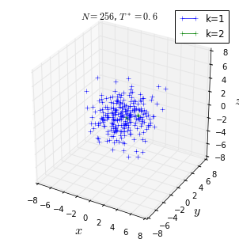
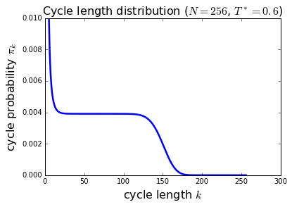

Bose Einstein Condensation
- Permutation Sample
%matplotlib inline
import random N = 3 statistics = {} L = range(N) nsteps = 10 for step in range(nsteps): i = random.randint(0, N - 1) j = random.randint(0, N - 1) L[i], L[j] = L[j], L[i] if tuple(L) in statistics: statistics[tuple(L)] += 1 else: statistics[tuple(L)] = 1 print L print range(N) print for item in statistics: print item, statistics[item]
[2, 1, 0] [0, 1, 2] [1, 2, 0] [0, 1, 2] [0, 2, 1] [0, 1, 2] [0, 1, 2] [0, 1, 2] [0, 1, 2] [0, 1, 2] [0, 1, 2] [0, 1, 2] [2, 1, 0] [0, 1, 2] [2, 0, 1] [0, 1, 2] [2, 1, 0] [0, 1, 2] [2, 1, 0] [0, 1, 2] (0, 1, 2) 3 (1, 2, 0) 1 (2, 1, 0) 4 (0, 2, 1) 1 (2, 0, 1) 1
- Marcov Harmonic Boson
import random, math def levy_harmonic_path(k, beta): xk = tuple([random.gauss(0.0, 1.0 / math.sqrt(2.0 * math.tanh(k * beta / 2.0))) for d in range(3)]) x = [xk] for j in range(1, k): Upsilon_1 = (1.0 / math.tanh(beta) + 1.0 / math.tanh((k - j) * beta)) Upsilon_2 = [x[j - 1][d] / math.sinh(beta) + xk[d] / math.sinh((k - j) * beta) for d in range(3)] x_mean = [Upsilon_2[d] / Upsilon_1 for d in range(3)] sigma = 1.0 / math.sqrt(Upsilon_1) dummy = [random.gauss(x_mean[d], sigma) for d in range(3)] x.append(tuple(dummy)) return x def rho_harm(x, xp, beta): Upsilon_1 = sum((x[d] + xp[d]) ** 2 / 4.0 * math.tanh(beta / 2.0) for d in range(3)) Upsilon_2 = sum((x[d] - xp[d]) ** 2 / 4.0 / math.tanh(beta / 2.0) for d in range(3)) return math.exp(- Upsilon_1 - Upsilon_2) N = 128 T_star = 0.9 beta = 1.0 / (T_star * N ** (1.0 / 3.0)) nsteps = 1000 positions = {} for j in range(N): a = levy_harmonic_path(1, beta) positions[a[0]] = a[0] for step in range(nsteps): boson_a = random.choice(positions.keys()) perm_cycle = [] while True: perm_cycle.append(boson_a) boson_b = positions.pop(boson_a) if boson_b == perm_cycle[0]: break else: boson_a = boson_b k = len(perm_cycle) perm_cycle = levy_harmonic_path(k, beta) positions[perm_cycle[-1]] = perm_cycle[0] for j in range(len(perm_cycle) - 1): positions[perm_cycle[j]] = perm_cycle[j + 1] a_1 = random.choice(positions.keys()) b_1 = positions.pop(a_1) a_2 = random.choice(positions.keys()) b_2 = positions.pop(a_2) weight_new = rho_harm(a_1, b_2, beta) * rho_harm(a_2, b_1, beta) weight_old = rho_harm(a_1, b_1, beta) * rho_harm(a_2, b_2, beta) if random.uniform(0.0, 1.0) < weight_new / weight_old: positions[a_1] = b_2 positions[a_2] = b_1 else: positions[a_1] = b_1 positions[a_2] = b_2
- Marcov Harmonic Boson Movie
import random, math, pylab, mpl_toolkits.mplot3d def levy_harmonic_path(k, beta): xk = tuple([random.gauss(0.0, 1.0 / math.sqrt(2.0 * math.tanh(k * beta / 2.0))) for d in range(3)]) x = [xk] for j in range(1, k): Upsilon_1 = (1.0 / math.tanh(beta) + 1.0 / math.tanh((k - j) * beta)) Upsilon_2 = [x[j - 1][d] / math.sinh(beta) + xk[d] / math.sinh((k - j) * beta) for d in range(3)] x_mean = [Upsilon_2[d] / Upsilon_1 for d in range(3)] sigma = 1.0 / math.sqrt(Upsilon_1) dummy = [random.gauss(x_mean[d], sigma) for d in range(3)] x.append(tuple(dummy)) return x def rho_harm(x, xp, beta): Upsilon_1 = sum((x[d] + xp[d]) ** 2 / 4.0 * math.tanh(beta / 2.0) for d in range(3)) Upsilon_2 = sum((x[d] - xp[d]) ** 2 / 4.0 / math.tanh(beta / 2.0) for d in range(3)) return math.exp(- Upsilon_1 - Upsilon_2) N = 256 T_star = 0.6 beta = 1.0 / (T_star * N ** (1.0 / 3.0)) nsteps = 1000 positions = {} for j in range(N): a = levy_harmonic_path(1, beta) positions[a[0]] = a[0] for step in range(nsteps): boson_a = random.choice(positions.keys()) perm_cycle = [] while True: perm_cycle.append(boson_a) boson_b = positions.pop(boson_a) if boson_b == perm_cycle[0]: break else: boson_a = boson_b k = len(perm_cycle) perm_cycle = levy_harmonic_path(k, beta) positions[perm_cycle[-1]] = perm_cycle[0] for j in range(len(perm_cycle) - 1): positions[perm_cycle[j]] = perm_cycle[j + 1] a_1 = random.choice(positions.keys()) b_1 = positions.pop(a_1) a_2 = random.choice(positions.keys()) b_2 = positions.pop(a_2) weight_new = rho_harm(a_1, b_2, beta) * rho_harm(a_2, b_1, beta) weight_old = rho_harm(a_1, b_1, beta) * rho_harm(a_2, b_2, beta) if random.uniform(0.0, 1.0) < weight_new / weight_old: positions[a_1] = b_2 positions[a_2] = b_1 else: positions[a_1] = b_1 positions[a_2] = b_2 fig = pylab.figure() ax = mpl_toolkits.mplot3d.axes3d.Axes3D(fig) ax.set_aspect('equal') list_colors = ['b', 'g', 'r', 'c', 'm', 'y', 'k'] n_colors = len(list_colors) dict_colors = {} i_color = 0 # find and plot permutation cycles: while positions: x, y, z = [], [], [] starting_boson = positions.keys()[0] boson_old = starting_boson while True: x.append(boson_old[0]) y.append(boson_old[1]) z.append(boson_old[2]) boson_new = positions.pop(boson_old) if boson_new == starting_boson: break else: boson_old = boson_new len_cycle = len(x) if len_cycle > 2: x.append(x[0]) y.append(y[0]) z.append(z[0]) if len_cycle in dict_colors: color = dict_colors[len_cycle] ax.plot(x, y, z, color + '+-', lw=0.75) else: color = list_colors[i_color] i_color = (i_color + 1) % n_colors dict_colors[len_cycle] = color ax.plot(x, y, z, color + '+-', label='k=%i' % len_cycle, lw=0.75) # finalize plot pylab.title('$N=%i$, $T^*=%s$' % (N, T_star)) pylab.legend() ax.set_xlabel('$x$', fontsize=16) ax.set_ylabel('$y$', fontsize=16) ax.set_zlabel('$z$', fontsize=16) ax.set_xlim3d([-8, 8]) ax.set_ylim3d([-8, 8]) ax.set_zlim3d([-8, 8]) #pylab.savefig('snapshot_bosons_3d_N%04i_Tstar%04.2f.png' % (N, T_star)) pylab.show()

TUTORIAL
- Permutation Sample Cycle
import random N = 20 stats = [0] * (N + 1) L = range(N) nsteps = 100 for step in range(nsteps): i = random.randint(0, N - 1) j = random.randint(0, N - 1) L[i], L[j] = L[j], L[i] if step % 100 == 0: cycle_dict = {} for k in range(N): cycle_dict[k] = L[k] while cycle_dict != {}: starting_element = cycle_dict.keys()[0] cycle_length = 0 old_element = starting_element while True: cycle_length += 1 new_element = cycle_dict.pop(old_element) if new_element == starting_element: break else: old_element = new_element stats[cycle_length] += 1 for k in range(1, N + 1): print k, stats[k]
1 18 2 1 3 0 4 0 5 0 6 0 7 0 8 0 9 0 10 0 11 0 12 0 13 0 14 0 15 0 16 0 17 0 18 0 19 0 20 0
- Direct Harmonic Boson
import math, random def z(k, beta): return (1.0 - math.exp(- k * beta)) ** (-3) def canonic_recursion(N, beta): Z = [1.0] for M in range(1, N + 1): Z.append(sum(Z[k] * z(M - k, beta) \ for k in range(M)) / M) return Z def make_pi_list(Z, M): pi_list = [0.0] + [z(k, beta) * Z[M - k] / Z[M] / M \ for k in range(1, M + 1)] pi_cumulative = [0.0] for k in range(1, M + 1): pi_cumulative.append(pi_cumulative[k - 1] + pi_list[k]) return pi_cumulative def naive_tower_sample(pi_cumulative): eta = random.uniform(0.0, 1.0) for k in range(len(pi_cumulative)): if eta < pi_cumulative[k]: break return k def levy_harmonic_path(dtau, N): beta = N * dtau x_N = random.gauss(0.0, 1.0 / math.sqrt(2.0 * math.tanh(beta / 2.0))) x = [x_N] for k in range(1, N): dtau_prime = (N - k) * dtau Upsilon_1 = 1.0 / math.tanh(dtau) + \ 1.0 / math.tanh(dtau_prime) Upsilon_2 = x[k - 1] / math.sinh(dtau) + \ x_N / math.sinh(dtau_prime) x_mean = Upsilon_2 / Upsilon_1 sigma = 1.0 / math.sqrt(Upsilon_1) x.append(random.gauss(x_mean, sigma)) return x ### main program starts here ### N = 8 T_star = 0.1 beta = 1.0 / N ** (1.0 / 3.0) / T_star n_steps = 1000 Z = canonic_recursion(N, beta) for step in range(n_steps): N_tmp = N x_config = [] y_config = [] z_config = [] while N_tmp > 0: pi_sum = make_pi_list(Z, N_tmp) k = naive_tower_sample(pi_sum) x_config += levy_harmonic_path(beta, k) y_config += levy_harmonic_path(beta, k) z_config += levy_harmonic_path(beta, k) N_tmp -= k
- Canonic Harmonic Recursion
import math def z(k, beta): return 1.0 / (1.0 - math.exp(- k * beta)) ** 3 def canonic_recursion(N, beta): Z = [1.0] for M in range(1, N + 1): Z.append(sum(Z[k] * z(M - k, beta) \ for k in range(M)) / M) return Z N = 100 beta = 1.0 Z = canonic_recursion(N, beta) print N, Z[-1]
100 27.328822346
- Canonic Recurrsion Movie
import math, pylab def z(k, beta): return 1.0 / (1.0 - math.exp(- k * beta)) ** 3 def canonic_recursion(N, beta): Z = [1.0] for M in range(1, N + 1): Z.append(sum(Z[k] * z(M - k, beta) \ for k in range(M)) / M) return Z N = 256 T_star = 0.6 beta = 1.0 / N ** (1.0 / 3.0) / T_star Z = canonic_recursion(N, beta) pi_k = [(z(k, beta) * Z[N - k] / Z[-1]) / float(N) for k in range(1, N + 1)] # graphics output pylab.plot(range(1, N + 1), pi_k, 'b-', lw=2.5) pylab.ylim(0.0, 0.01) pylab.xlabel('cycle length $k$', fontsize=16) pylab.ylabel('cycle probability $\pi_k$', fontsize=16) pylab.title('Cycle length distribution ($N=%i$, $T^*=%s$)' % (N, T_star), fontsize=16) #pylab.savefig('plot-prob_cycle_length.png') pylab.show()
